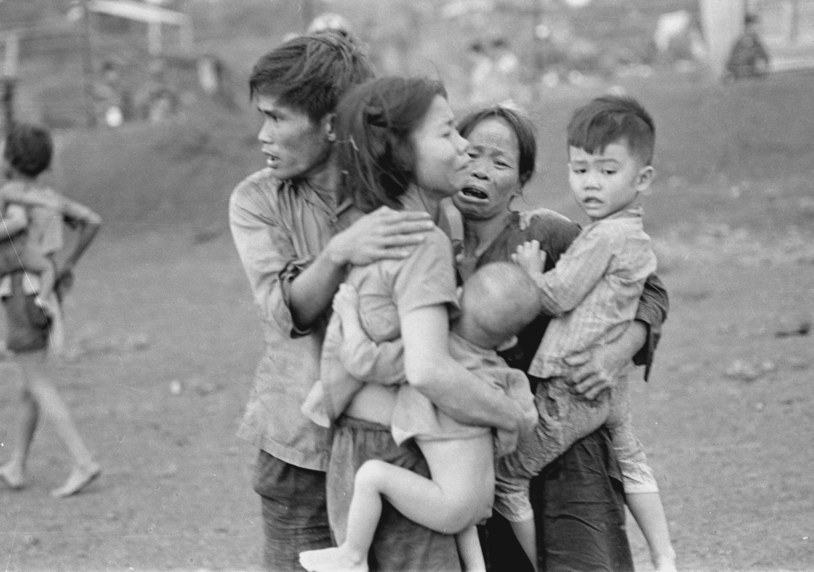

The Impacts of the Vietnam War on Vietnamese Children

The period of time and location that a child is born in decided their fate
and for the unfortunate who were born in Vietnam around the mid 1900s, their fate
was to survive through the harsh and dangerous time period, known as the Vietnam
War.
The challenges that they were forced to face had been numerous in number,
including air raids, the risk of being killed by soldiers, napalm and
harmful chemicals released by mainly the US forces. Their education was
a major issue as houses and schools were bombed and as a result, many children became
homeless and their schools had to often change locations or be held at night to
avoid becoming a target of heavy bombings. Some schools resorted to building bamboo
and palm leaf cottages in forests as their school.

'Going to school at night' (Đi học đêm) by Phi Tiến Sơn, 12 years old. Việt Nam, no.154, 1971 p. [14]. British Library, SU 216(2)
As a result, the Vietnam War severely damaged both their physical and mental health. The
heavy chemicals (including Agent Orange and other herbicides) damaged their organs and
trauma that came with it caused irreversible mental damage.
Despite hardships, the children had not given up the will to live, in fact, their
powerful will to live gave them the courage to fight, for themselves, for their families
and for the country. The Vietnamese Communist Party and the National Liberal Front (Viet Cong)
had inspired young ones to fight their enemies and to serve the country in a
struggle to reunite Vietnam and to regain peace. A resulting action was the attempted
assassination of the US Secretary of Defence,
Robert McNamara
in May 1963. This was attempted by
a young electrician named
Nguyễn Văn Trỗi However, Trỗi did not succeed in his plan and was sentenced to death
and was executed by a firing squad in Saigon on 15 October 1964.
Execution of Nguyễn Văn Trỗi. Việt Nam, no.149, 1970 p. 31. British Library, SU216(2)
Some children as young as 13 were even setting foot on the brutal battlefield of the
Vietnam War. These reckless young guerrillas learnt to fight their enemies, and killed
both American and South Vietnamese soldiers. An example of this
The damage that the Vietnam War had caused to their bodies were permanent and left eternal scars that they would never
forget.
Sources
-

Nguyễn Công Phi, 'Tiny guerrilla in the Nguyễn Văn Trỗi Youth Group in Quảng Nam province'. Việt Nam, no.141, 6, 1969 p. 29. British Library, SU216 - Commodo enim nisl turpis magnis enim morbi
- Convallis purus curae non sollicitudin posuere dolor ante
- Gravida magna dignissim imperdiet leo quisque
- Sapien hendrerit venenatis dis nec lobortis pharetra